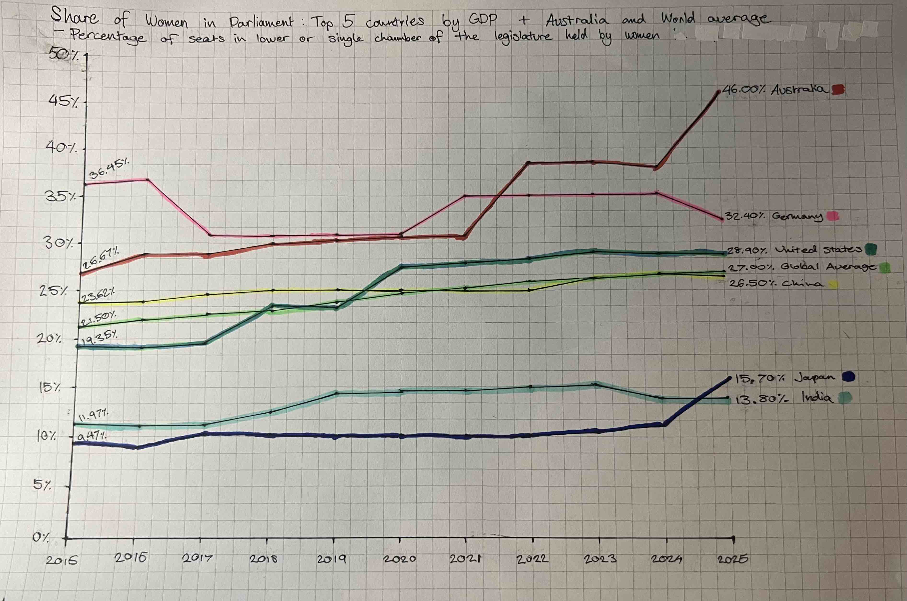
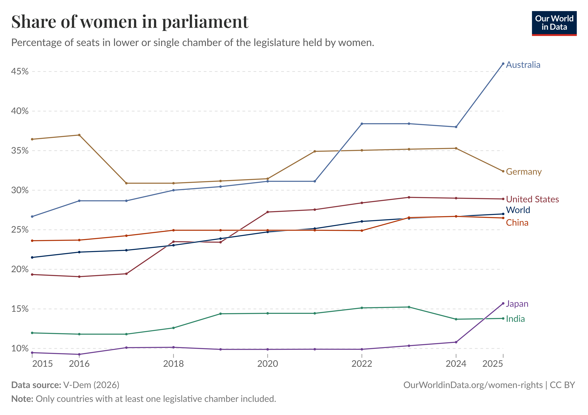
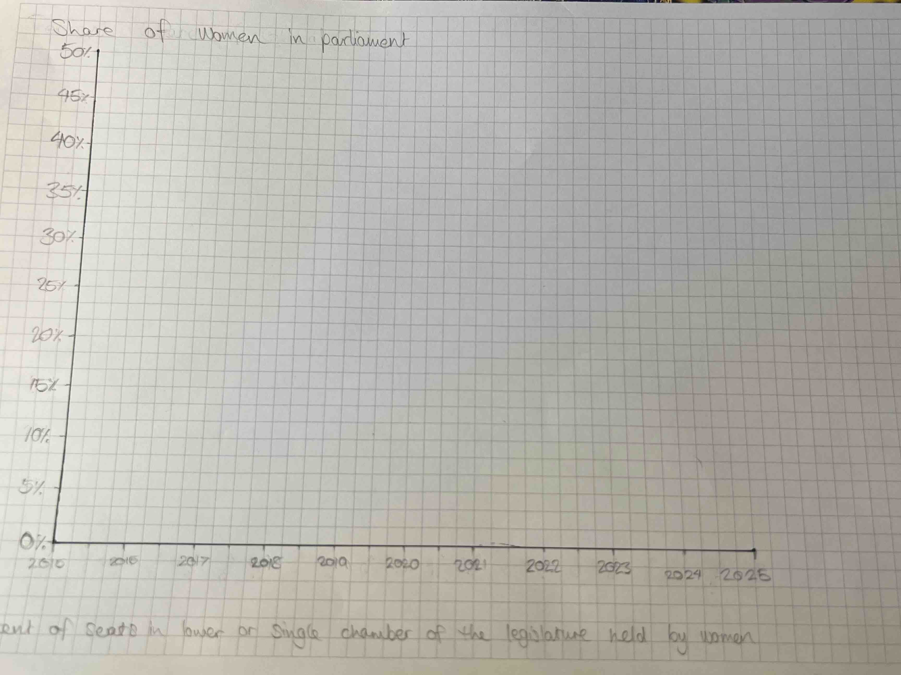
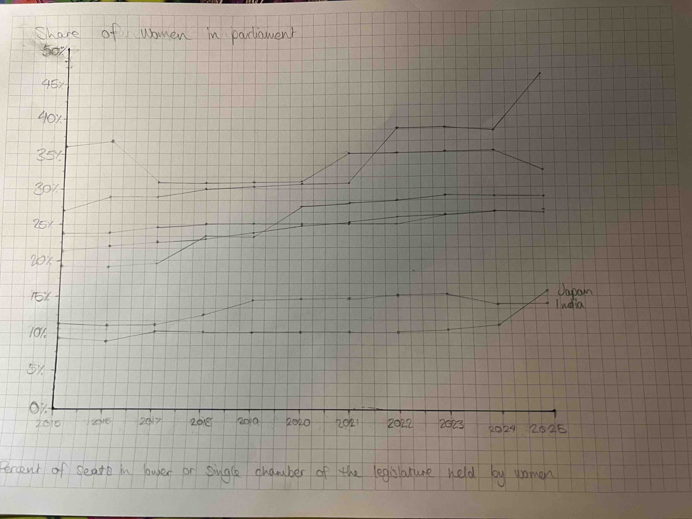
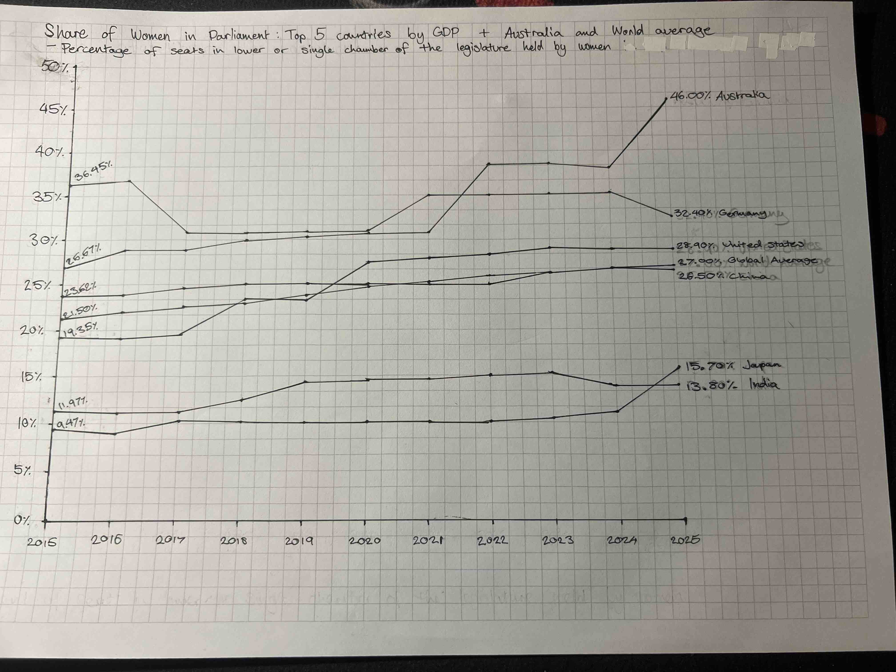
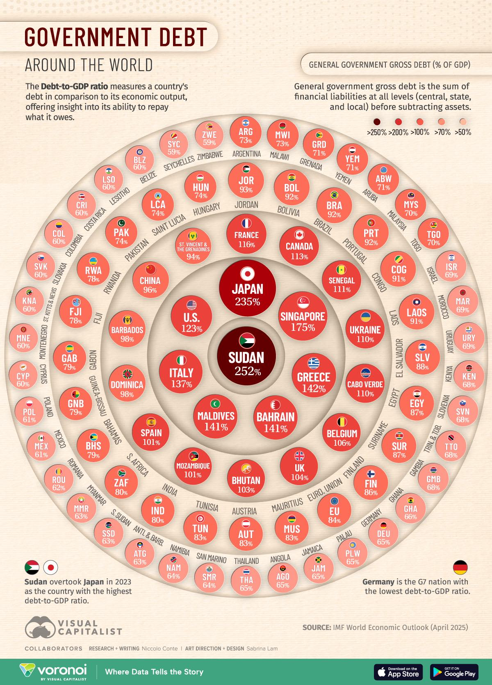

Posted August 5th, 2026

This visualisation is a hand-drawn recreation of "Share of Woman in Parliament" from Our World in Data. It tracks the percentage of parliamentary seats held by woman from 2015 to 2025, comparing the world's top economies by GDP, Australia and the global average. I chose this chart because it compresses a decade of political representation data from across the world into a single graph, and the overlapping lines made it a good technical challenge to draw accurately by hand.
The stages of creating the data visualisation by hand.




Recreating this chart by hand showed how much a line chart's readability depends on colour separation. The United States, China and the Global average sit close together for most of the timeline, so keeping them visually distinct required the use of colours to differentiate them, rather than relying on spacing alone. The overall shape and ordering of each country's trend came through well, especially Australia's rise after 2023 and Germany's plateau and decline. What needs improvement is precision at each data point, since some of the values likely drift slightly from the source data. With more time, I would plot exact values from the data set using a more detailed grid instead of estimating where the points would fall based on the data and reference image alone.
Posted August 5th, 2026

The objective of this task was to critically analyse a chosen data visualisation using core visual perception concepts, specifically preattentaive processing, Gestalt laws and visual comparison accuracy, to explain how nad why it effectively communicates information to viewers.
The feature that first grabs attention is colour and size, both used to display the debt-to-GDP ratio for each country. Sudan with a ratio of 252 has the darkest maroon shade and largest circle and sits in the centre of the visualisation, while Zimbabwe displays the lightest shade of red on the outermost ring with one of the lowest ratios at 59 percent, with the rings between these two points arranged so that values decrease moving from the inner point outward. Within each ring the value decreases moving clockwise around the circle before starting a new smaller ring outward. Together they draw the eye to the large, dark circle at the core as the highest risk country without needing to read a single label, while the small, pale circles around the outer edge come across as comparatively low priority.
This visualisation demonstrates the Gestalt Law of Similarity. Objects that share similar characteristics are perceptually grouped together, even when they are not physically identical. In this visualisation, colour saturation is used to represent debt-to-GDP levels, with the legend showing the colour category for over 250 percent, 200 percent, 100 percent, 70 percent, and 50 percent. Countries with similar shades of red are perceived as belonging to the same general risk group, even though the exact shade can vary slightly within a band. This allows a viewer to quickly identify the high-risk countries near the centre and low-risk countries near the outer edge simply by scanning for similar colouring, without needing to read every individual percentage value.
To reflect the quantitative variables, each country is assigned a size and colour saturation to represent its value, with larger and darker representing higher values. The area of a circle is one of the weaker channels for accurate quantitative comparison, since one circle can be twice the size of another, but it's hard for a viewer to distinguish this difference just by looking at them. Due to this, size is inferior to other methods such as position along a common axis or length, which allow for much more precise judgements in relative value. Consequently, this approach works well for forming a general impression of which countries carry more debt relative to others, but if a viewer wanted to know precisely how much higher one's ratio is would need to rely on the figures in each circle rather than the visual size itself.